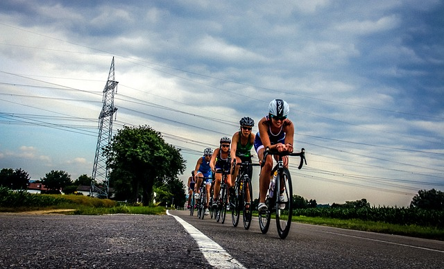
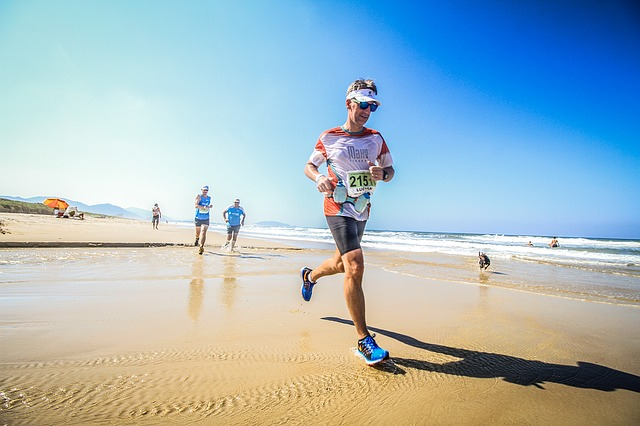

Le triathlon un sport pour tous

Le triathlon pour trois fois plus de plaisir

Il y a encore quelques années le triathlon était vu comme un sport extrême dont la pratique était réservée à une poignée de super-hommes ou super-femmes fanatiques des sports d'endurance.
De nos jours la pratique du triathlon s'est beaucoup démocratisée et jouit même d'une certaine forme d'engouement.
A juste titre, car le triathlon est un sport complet qui développera votre musculatures de façon harmonieuse, vous fera perdre du poids et vous aidera à forger un mental d'acier.
Le but de ce site est de dispenser des conseils pratiques en termes d'entraînement, équipement, nutrition, etc., à tous ceux qui souhaitent débuter en triathlon...bon triathlon à tous!!!
Le triathlon est l'enchaînement de 3 épreuves d'endurance: natation, vélo et course à pied avec des longueurs qui dépendent du format (sprint, olympique, half et IRONMAN). Il va donc falloir commencer par construire des bases solides dans chacune de ces disciplines.
Pour atteindre cet objectif, il faut aborder chacune des disciplines de manière indépendante. Vous allez vous entraîner comme si vous pratiquiez 3 sports...c'est ça le TRIPLE EFFORT!
Si vous débutez et vous avez d'abord envie de voir à quoi ça ressemble le triathlon rien de plus simple. Vous avez juste besoin de vos affaires de piscine, d'un vélo et d'une paire de chaussures de course. Rien qu'avec ça vous êtes prêts pour enchaîner les heures d'entraînement et découvrir le plaisir de varier autant vos activités.
Une fois que vous serez bien accro et que pour vous aussi le tri sera devenu un mode de vie, alors là il va falloir bien s'équiper surtout quand vous déciderez de vous inscrire à votre première compétition.
Le but ultime de votre entraînement à ne jamais perdre de vue, surtout pour celles et ceux qui souhaitent so'rienter vers le triathlon longue distance, sera celui d'habituer progressivement votre corps à soutenir un effort de longue durée. Bref vous deverez développer votre endurance.
J'ai découvert la course à pied un peu par hasard vers 28 ans et ça a été le déclic.
J'ai commencé à m'entraîner de plus en plus régulièrement et bien que je n'avais pas un passé de grand sportif j'ai vite commencé à enchaîner les semi-marathons pour enfin venir me frotter au marathon et à l'ultra.
Suite à une blessure du genou j'ai commencé la natation afin de continuer à faire du sport et assouvir ainsi ce qu'était devenu mon addiction.
La pratique du vélo et le début des premiers triathlons sprint sont venus après mais se sont vite imposés comme une vraie passion.
A 40 ans j'ai complété mon premier IRONMAN 70.3 en 5h41min donc...si je l'ai fait c'est à la portée de tous!!!